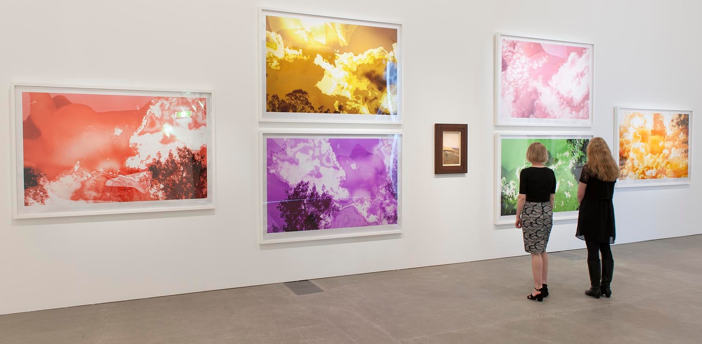

Sublime: intimations of infinity
Queensland Art Gallery | Gallery of Modern Art
30.8.2014 - 24.5.2015
'Sublime: intimations of infinity' features artists that create effects of wonder and uncertainty by engaging with sacred architectures, sublime geometries and the power of the natural world. [read more]

Tracey Moffatt: Spirited
Queensland Art Gallery | Gallery of Modern Art
25.10.14 - 8.02.2015
'Tracey Moffatt: Spirited' showcases the internationally renowned Australian artist's recent body of work, 'Spirit Landscapes' 2013, together with the premiere of a new video work, Art calls, featuring Moffatt as a television talk show host. To complement her own work, the artist selected works from the Gallery's Collection that explore a spiritual relationship with place. [read more]
Couldn't find a catalogue
Tracey Moffatt: Spirited
Queensland Art Gallery | Gallery of Modern Art
25.10.14 - 8.02.2015
'Tracey Moffatt: Spirited' showcases the internationally renowned Australian artist's recent body of work, 'Spirit Landscapes' 2013, together with the premiere of a new video work, Art calls, featuring Moffatt as a television talk show host. To complement her own work, the artist selected works from the Gallery's Collection that explore a spiritual relationship with place. [read more]
Couldn't find a catalogue